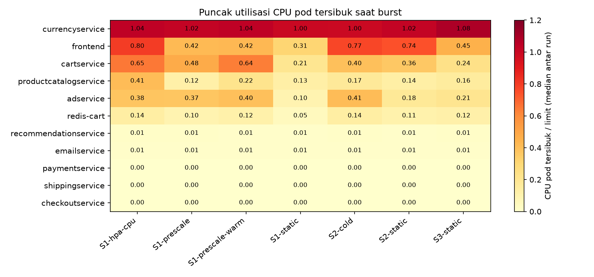
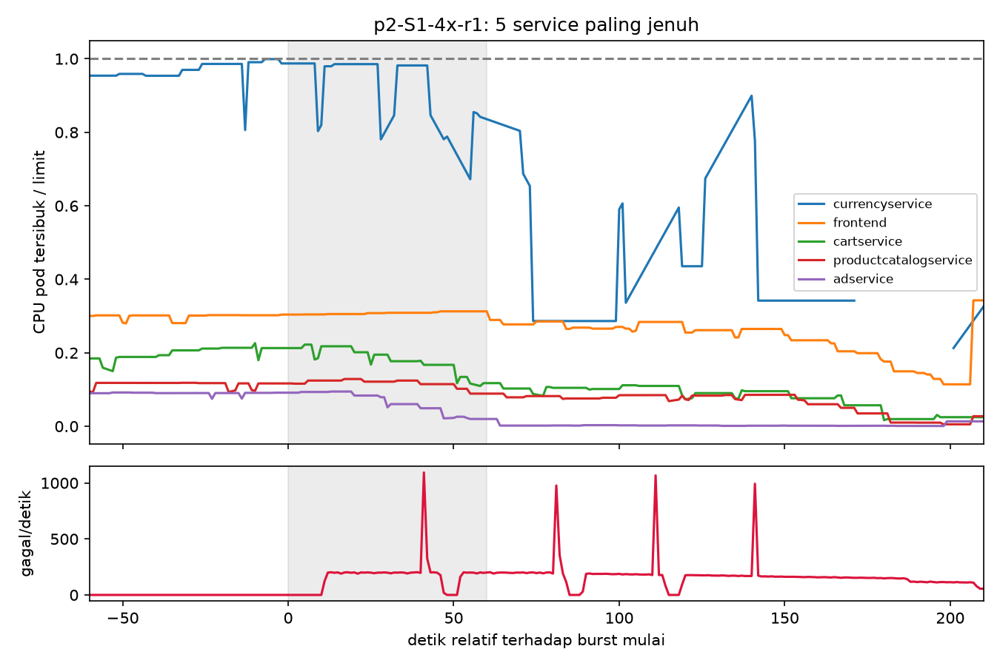
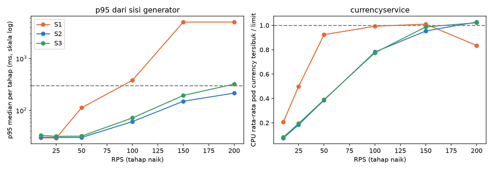
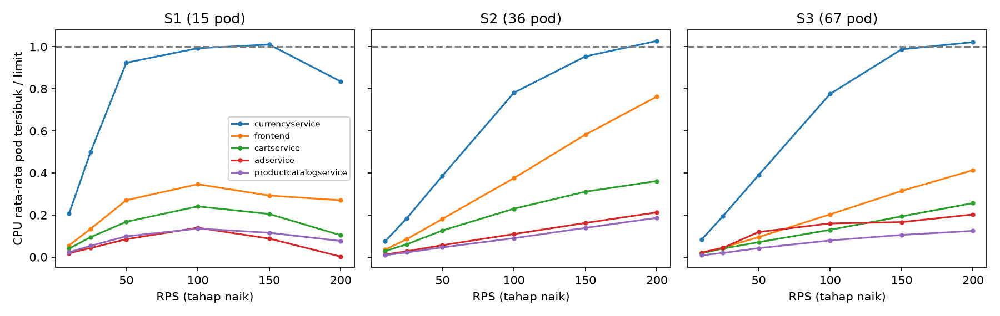

Tugas 1 — Cloud Experimental Environment
Lanjutan dari laporan 03. Analisis ulang data 29 run yang sudah ada (tanpa run baru), dari sudut perilaku service: ketika request gagal atau p95 naik, service mana yang jenuh dan resource apa penyebabnya. 3 November 2026.
Ringkasan.
currencyservice yang CPU-nya menyentuh limit (200m): pada 20 dari 21 run burst puncak pod tersibuk mencapai 0,95–1,23 dari limit. Service lain paling tinggi frontend (0,92) dan cartservice (0,65). Memory tidak jenuh di mana pun (puncak 0,63 dari limit).frontend hanya 0,31 dari limit, tetapi satu-satunya pod currencyservice sudah 0,97–1,01 sebelum burst mulai. Kegagalan muncul 9–11 detik setelah burst. Pola ini konsisten dengan frontend menunggu currencyservice, bukan frontend yang kehabisan CPU.currencyservice, di run yang mulai dari satu pod (S1 statis dan HPA CPU), 39–55 detik setelah burst. Bukan memory; diduga liveness probe gagal saat CPU di limit (belum terbukti).currencyservice tersibuk mendekati limit: S1 di 50–100 RPS, S2 dan S3 di 150–200 RPS.currencyservice yang bekerja.Semua dari results/ yang sudah ada. Skripnya analysis/saturation.py (fase 2 dan 3) dan analysis/step_saturation.py (fase 1) di cloud-dynamics-analysis-venv.
| Bahan | Dipakai untuk |
|---|---|
workload.csv | Gejala sisi pengguna: request gagal per detik dan p95 per detik, sebagai penanda awal gagal. |
cpu_usage.csv per pod | CPU tiap pod dibagi limit service-nya. Dikelompokkan per service, diambil pod tersibuk. Pod dianggap menyentuh limit jika ≥ 85% limit selama ≥ 3 detik berturut-turut. |
memory_working_set.csv per pod | Memory terhadap limit, untuk menyingkirkan memory sebagai penyebab. |
| Limit dari manifest | 200m untuk currencyservice, frontend, dan sebagian besar service; 300m adservice dan cartservice; 125m redis-cart. |
Cakupan: 21 run burst (S1, S2, S2 baru di-scale, S3 statis; HPA CPU; pre-scale 60 dan 180 detik, masing-masing 3 kali) dan 6 run step load. Window burst diambil dari 5 detik sebelum burst sampai 60 detik sesudah burst berakhir.
Ringkasan dari laporan 03: pada burst 4× (50 → 200 RPS selama 60 detik) dari 15 pod, S1 statis gagal 89–91%, HPA CPU 34–42%, S2 statis 0, 0, dan 21%, sedangkan S3 dan pre-scale 0%. Pertanyaan laporan ini: di mana di dalam aplikasi hambatan itu terjadi.
Generator hanya meminta halaman utama toko. Dari kode Online Boutique (bukan dari data ini dan belum diverifikasi pada fork yang dipakai), halaman itu dibangun oleh frontend dengan memanggil productcatalogservice, currencyservice (konversi harga), cartservice (lalu redis-cart), dan adservice. Jadi pada beban ini frontend bergantung pada empat service tersebut. checkoutservice, paymentservice, shippingservice, dan emailservice tidak dipanggil (CPU 0,00–0,01).

Gambar 1. CPU pod tersibuk terhadap limit pada window burst, median tiga run per kolom, 21 run. Nilai 1,0 berarti pod itu memakai seluruh limit CPU-nya.
| Service | Puncak CPU pod tersibuk / limit | Keterangan |
|---|---|---|
currencyservice | 1,00–1,08 | Menyentuh limit di setiap grup. Pada 20 dari 21 run puncak ≥ 0,95. |
frontend | 0,31–0,80 | Naik hanya jika request lolos dari currencyservice. Tertinggi 0,92 pada satu run HPA. |
cartservice | 0,21–0,65 | Tidak jenuh. |
adservice, productcatalogservice, redis-cart | 0,05–0,41 | Tidak jenuh. |
| Checkout, payment, shipping, email, recommendation | ≤ 0,01 | Tidak dipanggil oleh beban ini. |

Gambar 2. S1 statis (15 pod, satu pod currencyservice), run 1. Atas: CPU pod tersibuk terhadap limit untuk lima service paling jenuh. Bawah: request gagal per detik. Area abu-abu: burst.
| Run S1 statis | CPU currency sebelum burst | CPU frontend puncak | Gagal mulai (detik setelah burst) | Gagal saat burst |
|---|---|---|---|---|
| r1 | 0,97 | 0,31 | +11 | 89,3% |
| r2 | 0,98 | 0,31 | +10 | 89,6% |
| r3 | 1,01 | 0,31 | +9 | 91,2% |
Pada 50 RPS (L0) satu pod currencyservice sudah memakai hampir seluruh limit 200m. Kapasitas S1 yang lolos SLO ada di titik ini, sehingga burst 4× tidak punya ruang sama sekali. Selama 90% request gagal, frontend hanya memakai sekitar sepertiga limit-nya. Ini konsisten dengan frontend menunggu currencyservice.

Gambar 3. Step load tahap naik, median dua run per setting. Kiri: p95 per tahap (garis putus-putus: SLO 300 ms). Kanan: CPU rata-rata pod currencyservice tersibuk dibagi limit.
| Setting | RPS | p95 median (ms) | Gagal (%) | CPU currency tersibuk / limit | CPU frontend tersibuk / limit |
|---|---|---|---|---|---|
| S1 (15 pod) | 50 | 112 | 0 | 0,92 | 0,27 |
| S1 | 100 | 380 | 0 | 0,99 | 0,35 |
| S1 | 150 | 5043 | 58 | 1,01 | 0,29 |
| S2 (36 pod) | 150 | 150 | 0 | 0,95 | 0,58 |
| S2 | 200 | 216 | 0 | 1,03 | 0,76 |
| S3 (67 pod) | 150 | 194 | 0 | 0,99 | 0,31 |
| S3 | 200 | 321 | 0 | 1,02 | 0,41 |
Di semua setting, p95 mulai membengkak ketika currencyservice mendekati limit (≈ 0,9–1,0), sedangkan CPU frontend masih rendah di S1 dan S3. Menambah pod dari S2 ke S3 tidak menggeser titik ini (p95 pada 200 RPS: 216 vs 321 ms).
Puncak memory currencyservice terhadap limit 128 MiB adalah 0,28–0,63 pada semua grup, jadi memory bukan penyebab. Restart dibahas di 4.2. Throttling CPU tidak bisa diperiksa karena metrik CPU_THROTTLED kosong. Yang bisa dipastikan hanya bahwa penggunaan CPU menempel di limit, bukan bahwa kernel men-throttle proses.
| Grup (3 run) | Pod currency | Pod yang bekerja | Pod di limit (maks) | Pod tersibuk / rata-rata pod aktif |
|---|---|---|---|---|
| S1 statis | 1 | 1 | 1 | 1,0 |
| S2 statis | 10 | 3–4 | 1–2 | 1,2–1,6 |
| S2 baru di-scale | 10–11 | 6 | 1–2 | 1,3–1,5 |
| S3 statis | 20 | 9 | 1 | 1,5–2,3 |
| HPA CPU | 18–20 | 5–9 | 3–4 | 1,2–1,8 |
| Pre-scale 60 dan 180 detik | 20 | 8–11 | 1–2 | 1,7–2,2 |
"Pod yang bekerja" berarti CPU rata-rata di window lebih dari 10% limit. Pada setiap grup yang punya banyak pod, paling banyak 60% pod currencyservice ikut bekerja.
Perbandingan lain dengan hanya angka dari data: pada 50 RPS satu pod S1 memakai 0,92 dari limit. Jika beban dibagi rata, pod di S2 (10 pod) akan memakai sekitar 0,09 dan di S3 (20 pod) sekitar 0,05. Yang terukur pada pod tersibuk adalah 0,39 di keduanya, sekitar 4× dan 8× lebih tinggi. Pod tersibuk S2 dan S3 sama pada 25, 50, dan 100 RPS (0,18–0,19; 0,39; 0,78) walau pod S3 dua kali lebih banyak. Jadi beban yang diterima pod tersibuk tidak turun ketika pod ditambah.

Gambar 4. CPU pod tersibuk terhadap limit per service pada step load tahap naik, per setting.
Dari restarts.csv (selisih penghitung restart per pod, dibandingkan dengan awal burst): restart hanya terjadi pada currencyservice, dan hanya pada run yang memulai dari satu pod currencyservice (S1). Tidak ada service lain yang restart, dan tidak ada restart di S2, S3, maupun pre-scale.
| Grup | Restart currencyservice (detik setelah burst mulai) |
|---|---|
| S1 statis r1 | +55, +85, +115, +205 |
| S1 statis r2 | +53, +83, +143 |
| S1 statis r3 | +39, +68, +153 |
| HPA CPU r1, r2, r3 | +49, +49, +43 (satu kali tiap run) |
| Step load S1 (r1, r2) | 2–3 kali, pada tahap 150–200 RPS (naik maupun turun) |
Memory pod itu 0,28–0,63 dari limit, jadi restart ini bukan kehabisan memory. Penyebab yang paling mungkin: manifest memakai livenessProbe gRPC pada port 7000 untuk currencyservice, dan pod yang CPU-nya di limit bisa gagal menjawab probe tepat waktu, sehingga kubelet mematikannya. Ini dugaan: event kubelet (Unhealthy, Killing) tidak ada di data. Jika benar, pod yang jenuh tidak hanya lambat tetapi hilang sementara, dan pada S1 itu berarti seluruh kapasitas currencyservice hilang selama pod di-restart.
Dugaan dari laporan 03 tetap: frontend memegang koneksi gRPC jangka panjang ke currencyservice lewat ClusterIP, sehingga kube-proxy memilih pod hanya saat koneksi dibuat dan pod baru tidak menerima beban. Data di atas sejalan dengan itu (jumlah pod aktif jauh di bawah jumlah pod, dan pod tersibuk tidak mengikuti jumlah pod), tetapi bisa juga dijelaskan mekanisme lain. Verifikasinya butuh koneksi aktif per pod atau restart frontend, yang belum dilakukan.
currencyservice yang sudah penuh pada 50 RPS. Kegagalan muncul 10–21 detik setelah burst (S1 statis: 9–11 detik).currencyservice restart 39–55 detik setelah burst mulai (4.3).currencyservice sejak sebelum burst, 0 request gagal, tetapi pod tersibuk tetap menyentuh limit pada detik +25 sampai +46 dan bertahan 65–94 detik. Itu sebabnya p95 masih di atas 300 ms pada 26–58 dari 60 detik burst (laporan 03).currencyservice yang berguna sama dengan jumlah pod yang benar-benar menerima beban, bukan kube_deployment_spec_replicas.linkerd_* kosong di 29 dari 29 run). Hubungan "frontend menunggu currency" disimpulkan dari CPU yang menempel di limit pada service itu dan rendah di frontend, bukan dari pengukuran di hop itu.rate 1 menit, sehingga waktu mulai jenuh bisa bergeser beberapa detik. Throttling tidak terukur.currencyservice pada puncak burst 0,53–0,56 core di S2 statis, tetapi 0,93–1,09 core di S3 dengan beban sama. Ini tidak bisa dijelaskan dari data yang ada.currencyservice dan baca kode frontend, lalu restart frontend dan lihat sebaran CPU berubah atau tidak.CPU_THROTTLED, aktifkan metrik Linkerd (p95 dan success rate per service), lalu ulang 3 run burst S1 dan HPA CPU. Dengan itu hubungan antar service bisa diuji per hop.